AI Academy · Level 2 · Grade 7 · Week 8 · Student lesson
Operational Labels
Learn to understand, design, build, test and explain AI systems responsibly.
Project: Transparent Book Recommender
Before you start
Week 3: boundary operators have exact meanings.
Plan time to read, investigate and explain. Keep predictions separate from observations.
Student lesson · 1 of 16
Your mission
Your learning target
I can apply a category definition using explicit evidence and boundary rules.
I can distinguish a known failure from information that is missing or unreadable.
I can use disagreement to improve a labelling guide without mistaking agreement for truth.
Remember before reading
Close your notes first. A rough first answer helps us choose the right starting point; it is not a score for your ability.
Without opening the old lesson, explain one key idea from Rows Columns and Data Types. Give an example and a mistake that the idea helps you avoid.
Without opening the old lesson, explain one key idea from Loops and Stopping. Give an example and a mistake that the idea helps you avoid.
Without opening the old lesson, explain one key idea from Decompose a Goal. Give an example and a mistake that the idea helps you avoid.
After trying, check the relevant lesson or ask your teacher. Change the part of your explanation that the evidence shows was wrong.
Week 8: Operational Labels
A label is reliable only when different people can apply its definition consistently.
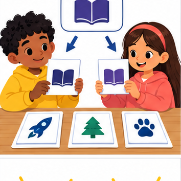
THINKER MISSION
Write and test definitions for ‘easy book’ and ‘hard book.’
Thinker name and date:
Readiness for the connected explanation
A transcript leaves out an unclear word. Why should a later system not simply treat that missing word as a known value?
This week’s end goal
By the end, I can resolve label disagreement by checking an operational definition at equality.
Student lesson · 2 of 16
Notice the evidence
PICTURE STORY
Notice → Predict → Explain
Begin with visible evidence. Do not explain more than the picture and information support.
MYSTERY
The learners must use operational labels to solve a problem. What information do they have? What decision or calculation do they make? What would count as evidence that it worked?
Three observations (what you can point to):
My prediction and the clue supporting it:
A closer explanation
Two students are sorting fictional event cards for a classroom calendar. Their first instruction is Put the good cards together. Mina calls a colourful card good. Theo calls a plain card good because its room is easy to read. They disagree even though both followed a reasonable interpretation of the word good.
A category is useful for a task when people can tell what evidence makes an example belong to it. An operational definition states the observations or checks to perform. For this paper exercise, we will check two printed fields: an event day and a room code. The task is to check the record against a classroom policy, not to judge the quality of the event or the person who wrote it.
Labels depend on the definition in use. A model fitted to labels can learn the distinctions those labels encode, including mistakes and inconsistencies. Before asking a model to copy a label, ask whether people have a clear, useful guide for assigning it.
Student lesson · 3 of 16
See how it works
VISUAL MECHANISM
Input → Process → Output
Trace the information. At each stage, ask what changed and how you could test it.
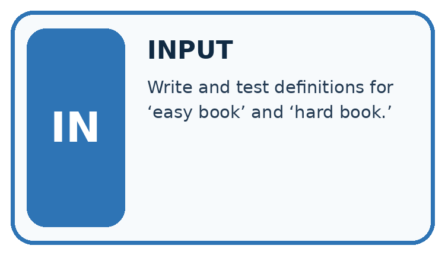
↓
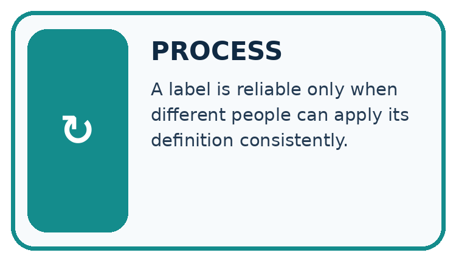
↓
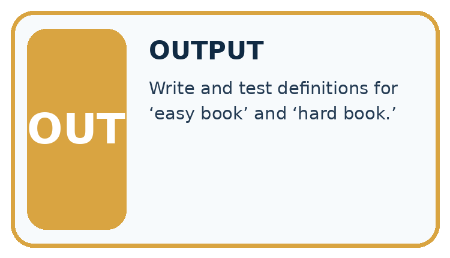
Which stage could fail even when the other two are correct? Explain:
A closer explanation
Our fictional calendar accepts a whole-number day from 1 through 30, including both endpoints, and exactly one room code, A or B. The month is already fixed for this exercise. A blank or unreadable field counts as unknown. The categories are revise, review and ready. Use the checks in the order shown.
Three ordered checks for a calendar card
Known failure and unknown are different. Day 31 is known and outside the accepted range, so the card needs revision. An unreadable day might be valid or invalid; without another known failure, it needs review. Never silently turn a blank into zero just to make a comparison possible.
Connect the picture and the explanation
Point to the input, the deciding step and the result in this week’s visual. Explain the same step in ordinary words. A picture helps when you can say what each part represents.
Student lesson · 4 of 16
Compare the cases
CASE GALLERY
Four Tests, Four Kinds of Evidence
A system is not understood until it survives more than one comfortable example.


NORMAL CASE: predict and name evidence. BOUNDARY CASE: predict and name evidence.


MISSING INFORMATION: predict and name evidence. TRANSFER CASE: predict and name evidence.
Which case is most likely to reveal a hidden assumption? Why?
Change one thing in the pictured case
Change: Change the documented policy to fewer than 80 instead.
Prediction: A’s original labels now match; B must change its equality behavior.
Reason: The authoritative definition changed, not the physical books.
Student lesson · 5 of 16
Words that unlock the idea
VOCABULARY LAB
Words You Can Use to Reason
A definition matters when you can recognize the idea, use it, and contrast it with a near-miss.
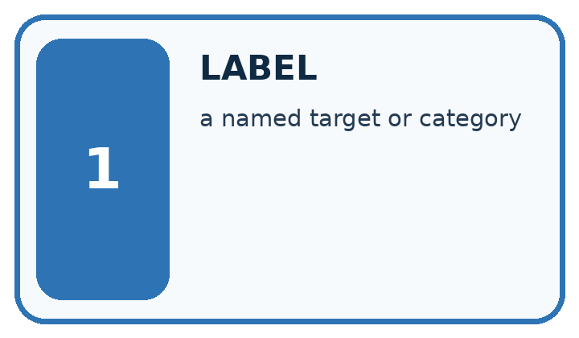
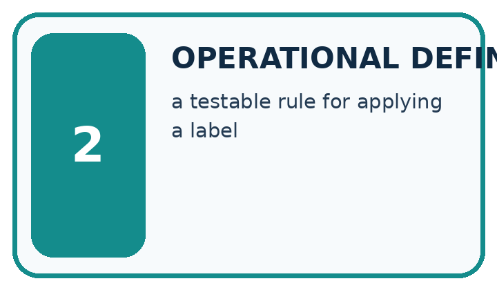
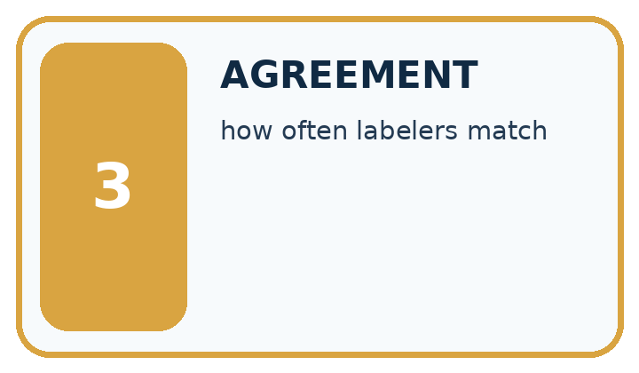
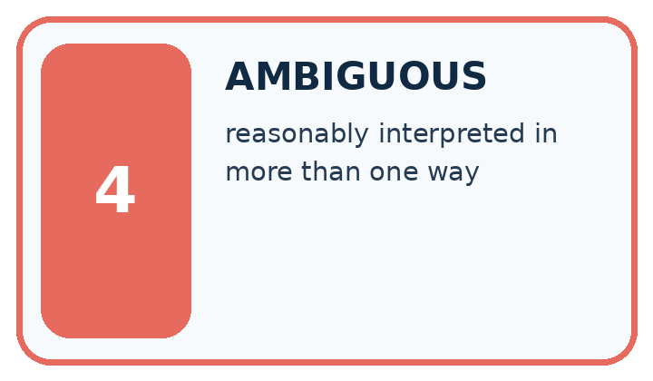
| Word | My own example | Not this / boundary |
|---|---|---|
| label | The recorded target category or value attached to an example. | |
| operational definition | A precise rule explaining how a concept will be observed, measured or labelled in this activity. | |
| agreement | How often two judgments match; matching judgments can still both be wrong. | |
| ambiguous | Having more than one reasonable interpretation given the available information. |
Words used in the closer explanation
| Word | Meaning |
|---|---|
| Category | A group defined by stated membership criteria |
| Annotator | A person who assigns labels to examples |
| Disagreement | A case where annotators assign different labels to the same example |
Student lesson · 6 of 16
Follow a worked example
WORKED EVIDENCE
Reason Step by Step
Predict first. Then check each step. A correct answer without visible reasoning is incomplete evidence.
Worked evidence for Operational Labels
1. Weak label: ‘easy book.’
2. Operational rule: easy for this reader if difficulty level ≤ 2 and unfamiliar words per page ≤ 3.
3. Two labelers test the same 8 books.
4. Agreement of 7/8 identifies one disagreement to review. Check the source, each annotator’s application and the label rule before choosing a repair.
Recalculate, retrace, or restate the reasoning in your own representation:
CHECK Did the evidence answer the exact question? Did the total, path, or source record stay consistent?
A closer explanation
| Card fields | Relevant evidence | Label and reason |
|---|---|---|
| Day 12 room A | Both values satisfy the criteria | Ready because both checks pass |
| Day 31 room A | 31 is outside 1 through 30 | Revise because a known value fails |
| Day 12 room unreadable | No known failure but the room is unknown | Review until the room is checked |
| Day 31 room unreadable | The day already fails although the room is unknown | Revise because the first check has priority |
For the last card, first read only what is known: day 31. Compare it with the allowed range and record a failure. The guide therefore selects revise before the missing-room check. Checking the room later could reveal another problem, but it cannot make day 31 satisfy this policy.
A clear explanation cites the particular criterion. Saying It looks wrong is not enough. Write Day 31 exceeds the accepted maximum of 30 instead. That explanation lets another person reproduce the check and challenge it if the recorded value or policy is different.
Learn from the worked case
Cover the result before checking it. Say what is given, choose the procedure, and follow one step at a time. Then uncover the result and explain your first mismatch. Ask why a step is allowed, not only what number it produces.
A pictorial worked case: Operational Labels
Two fictional catalogue reviewers label books compact or extended.
The facts we will use
Agreed policy: compact means at most 80 pages; extended means more than 80.
Reviewer A uses pages<80; reviewer B uses pages<=80. Inspect books of 79,80,81 pages.


Read the picture one step at a time
Why this result follows
The reviewers agree on two of three examples, but that fraction does not decide which definition to keep. The documented policy decides the equality case. Repairing A’s implementation aligns its labels with the agreed meaning. Rechecking 79 and 81 ensures the boundary fix preserves adjacent decisions.
What this example does not establish
A shared definition improves consistency but does not prove the category captures every learner’s needs.
Read the labelled picture: Why can we not resolve the disagreement merely by taking a majority of reviewers?
Change one thing: Change the documented policy to fewer than 80 instead. Predict the result before checking the explanation. What remains the same?
Student lesson · 7 of 16
Find and repair a mistake
ERROR DETECTIVE
Compare → Diagnose → Repair
Do not patch the answer. Find the earliest unsupported assumption, wrong step, or weak evidence.
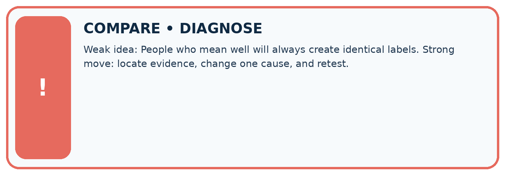
| Evidence record | Expected | Actual | Likely cause / next test |
|---|---|---|---|
| normal case | works | ||
| boundary case | stated rule | ||
| missing input | safe response | ||
| fresh transfer | generalizes |
Repair one cause. Why is this repair better than changing several things?
A closer explanation
If two annotators agree on four of six cards, we know that four assigned labels matched. We do not yet know whether those labels followed the guide. Both annotators might have made the same mistake. Check their reasoning against the criteria and, where necessary, the source record.
Even perfect agreement under our calendar policy would not prove that the room is really booked. It would only show agreement about whether the printed fields pass the specified checks. The policy itself may need changes for a real calendar. Record the policy version so examples labelled under different instructions are not mixed without review.
Student lesson · 8 of 16
Practise together
LOGIC STUDIO
Trace Before You Run
Block code, pseudocode, tables, and diagrams are different ways to expose the same reasoning.

SET evidence_record PREDICT expected_result RUN one normal case and one boundary case COMPARE actual_result with expected_result IF different: locate first cause; change one factor; RETEST EXPLAIN result, limitation, and next safe step
Trace one input. Which line changes the state or chooses a path?
A closer explanation
Mina labels day 30, room B as ready; Theo labels it revise because he thought the range stopped before 30. The disagreement points to a boundary interpretation. The guide says including both endpoints, so 30 passes. The appropriate repair is to clarify and practise the inclusive boundary, not to change the label merely because one student is more confident.
Ask annotators to label examples independently before comparing. If they copy one another, agreement no longer tells us whether the guide can be applied independently. Keep the original labels and reasons when discussing differences, then record any corrected labels separately.
Practise with less help: Replace a vague instruction
Use workbook W2 for the connected example “Categories and operational labels”. First fill the input and rule boxes. Try the middle steps before asking for a hint. After a hint, try the next step yourself.
| Plan | Do | Check |
|---|---|---|
| What is given? Which rule or procedure applies? | Record each intermediate step. | Does the result follow? What remains unknown? |
Explain your trace to a partner. Your partner points to one step to check. Swap roles on the next case. Each person writes their own explanation.
Check your reasoning
Use the worked case for Categories and operational labels. Proposed explanation: “A blank is the same as a failing value”. Decide whether this explanation is supported. Point to the step or supplied fact that decides; explain your repair if needed.
Answer on your own before discussion. If you are unsure, say which step you need help with.
Explain the picture
Why can we not resolve the disagreement merely by taking a majority of reviewers?
This is supported practice. Keep the separately named independent case for an attempt before feedback.
Student lesson · 9 of 16
Run the investigation
EVIDENCE LAB
Predict → Test → Record → Explain
Keep expected and actual results separate. Surprises are useful data when recorded honestly.
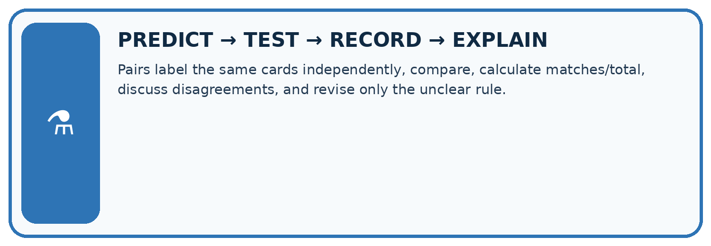
Pairs label the same cards independently, compare, calculate matches/total, discuss disagreements, and revise only the unclear rule.
| Test / input | Prediction | Actual | Evidence / calculation | Change or keep? |
|---|---|---|---|---|
| normal | ||||
| boundary | ||||
| missing | ||||
| fresh transfer |
What did the hardest test teach you that the normal test did not?
Plan → try → check
Before trying: what do I expect, and why? While trying: which step could first go wrong? Afterwards: what did I actually observe, and what should change? Keep “not run” if you only traced the procedure.
Student lesson · 10 of 16
Build your understanding
MASTERY
From Knowing the Word to Owning the Idea
Move upward only when you can produce evidence without copying the worked example.

1 • NAME: Define the concept without repeating the textbook.
2 • TRACE: Show the information, state, branch, calculation, or evidence path.
3 • APPLY: Solve a different example independently.
4 • CHALLENGE: Find a boundary case, counterexample, or unfair outcome.
5 • EXPLAIN LIMITS: Say when the result should not be trusted or used alone.
My strongest evidence of independent understanding:
Student lesson · 11 of 16
Connect your project
CUMULATIVE PROJECT
Transparent Book Recommender
Every week adds one inspectable piece. The system must show how it reached a result.
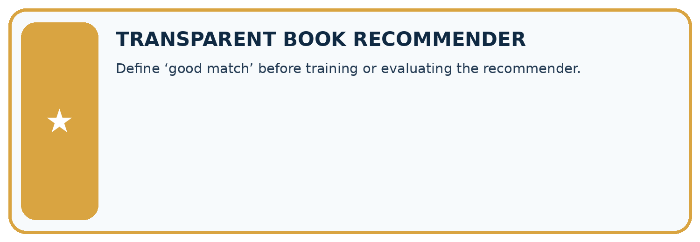
THIS WEEK’S CHECKPOINT Define ‘good match’ before training or evaluating the recommender.
SYSTEM MAP Reader need → allowed inputs → transparent rule or score → ranked candidates → explanation → test record → human decision
What will you add, change, or verify in the project this week?
What should remain under human control?
RESPONSIBLE DESIGN Collect only necessary information. Show uncertainty and limits. Never confuse a ranking with a fact about a person.
Evidence for your project
Give Transparent Book Recommender metadata labels explicit definitions and boundary examples for reviewers.
Student lesson · 12 of 16
Show what you know
INDEPENDENT MASTERY PROOF
Explain • Transfer • Test • Defend
Complete this page without copying the worked example. Your reasoning matters more than decoration.
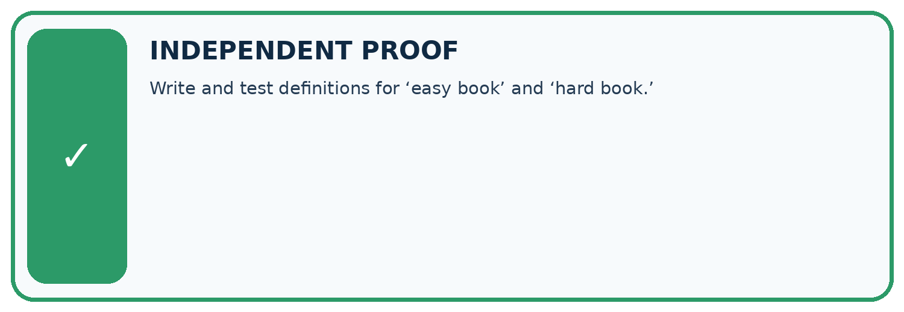
CHALLENGE Write and test definitions for ‘easy book’ and ‘hard book.’
1. My fresh example, trace, calculation, or design:
2. My evidence that it works (include a boundary or missing-data case):
3. One limitation, fairness concern, or situation needing human review:
SELF-CHECK □ I explained the mechanism □ I used evidence □ I tested a fresh case □ I named a limitation □ I can answer ‘why?’
Student lesson · 13 of 16
Study a complete case
Week 8 Worked case
Use the supplied details to practise the weekly concept before attempting the independent question. This case extends the illustrated lesson.
The situation
Short means fewer than 100 pages. Two annotators disagree about a 100-page book.
The question
Resolve the label.
Worked explanation
It is not Short under the stated definition. Agree operational boundaries before labelling.
Explain it in your own words
Which detail supports the answer, and why does it matter?
Trace the supplied case visually
Define Short before labelling books
| Evidence or stage | Value or result |
|---|---|
| 99 pages | Short |
| 100 pages | Not Short |
| 101 pages | Not Short |
Short means fewer than 100 pages. Two annotators disagree about a 100-page book.
Resolve the label.
It is not Short under the stated definition. Agree operational boundaries before labelling.
Student lesson · 14 of 16
Try a new case independently
Independent case: Changed independent case
Two labellers use book-length rules: fewer than 120 pages and at most 120 pages. Label books with 110,120,121 pages. The agreed policy is at most 120. Repair the disagreement.
Attempt this case before feedback. Record any help. Earlier examples below are further practice; a case already practised with feedback cannot establish fresh transfer.
Week 8 Independent application
Close the worked explanation. Apply the idea to this different question without copying.
Use a clear label rule: short means 80 pages or fewer. Two judges label an 80-page book differently. What shared instruction resolves this disagreement?
My answer, with a trace, calculation or supporting evidence
Create and test
Change one relevant detail. Predict the result before testing. Include a boundary or missing-information case when it helps reveal a limit.
My changed input and expected result
Connect to your project
Define ‘good match’ before training or evaluating the recommender.
The evidence I will keep
Your teacher has the independent answer and scoring criteria. Complete the matching workbook week to keep your practice evidence together.
Transfer practice from the original programme
Two labelers use 'short' to mean pages<100 and pages<=100. They disagree only on 100-page books. Write a shared definition and explain how to repair the existing labels.
Use feedback to improve
Attempt the independent case before hints. Record whether you worked alone, used a hint or followed a model. After feedback, fix the first unsupported step and explain why it changed. A later check uses a changed case, not a copied answer.
Student lesson · 15 of 16
Your lesson route
Start with this question: Two fictional catalogue reviewers label books compact or extended.
| By the end, I can | How I will show it |
|---|---|
| Apply a category definition using explicit evidence and boundary rules | Explain the deciding step, show a trace or test, and state one limit. |
| Distinguish a known failure from information that is missing or unreadable | Explain the deciding step, show a trace or test, and state one limit. |
| Use disagreement to improve a labelling guide without mistaking agreement for truth | Explain the deciding step, show a trace or test, and state one limit. |
Remember → watch and explain → try with help → investigate → try independently → keep project evidence. Your teacher may spread this lesson across several classes.
Keep your first prediction. Compare it with what the evidence shows and explain any change.
Student lesson · 16 of 16
Finish and return
Close your notes. Explain this goal in your own words: Apply a category definition using explicit evidence and boundary rules
If you are unsure, return to the worked picture and explain one arrow. If you are ready, change an input or assumption and justify your prediction.
Save your workbook evidence. At the next review, try a different case before opening your old answer.